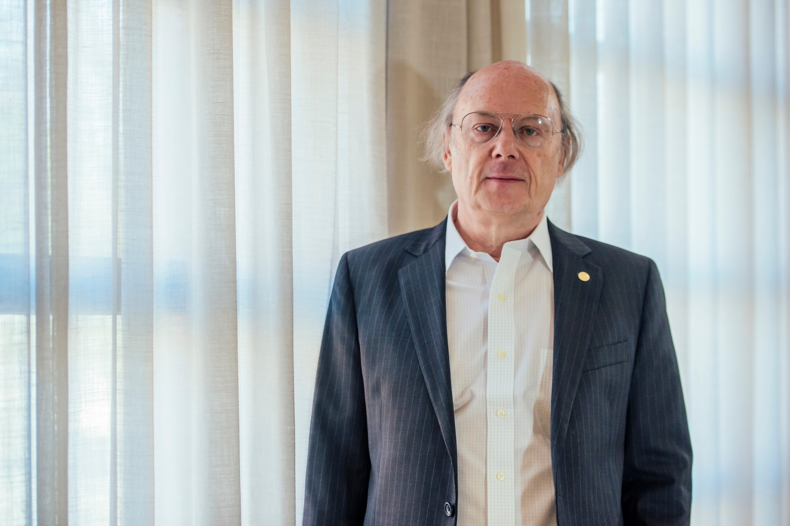

Stroustrup was born in Aarhus, Denmark. His family was working class, and he went to the local schools.[7] He attended Aarhus University 1969–1975 and graduated with a master's degree in mathematics and computer science. His interests focused on microprogramming and machine architecture. He learned the fundamentals of object-oriented programming from its inventor, Kristen Nygaard, who frequently visited Aarhus.
Here's a time line of Bjarne Stroustrup:
- In 1979 - Stroustrup began his career as a member of technical staff in the Computer Science Research Center of Bell Labs in Murray Hill, New Jersey, USA.
- 1993 -He was made a Bell Labs fellow and in 1996, an AT&T Fellow.
- 2002 to 2014 -Stroustrup was the College of Engineering Chair Professor in Computer Science at Texas A&M UniversityFrom 2011
- 2011 -he was made a University Distinguished Professor.
- 2014 - Stroustrup is a Technical Fellow and Managing Director in the technology division of Morgan Stanley in New York City and a Visiting Professor in Computer Science at Columbia University